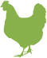
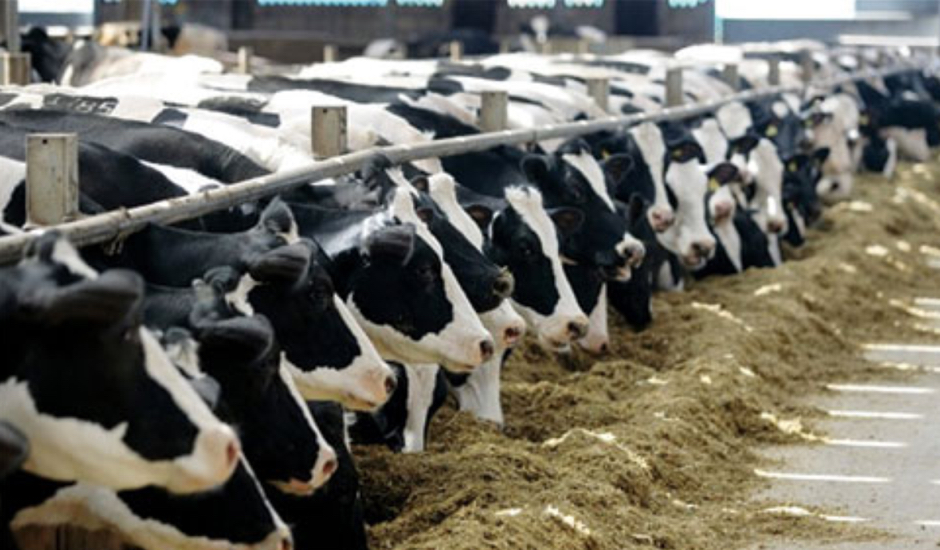

<!DOCTYPE html><html lang="ru"></html><head><meta http-equiv="Content-Type" content="text/html; charset=utf-8"><meta name="viewport" content="width=device-width"><title>Главная  </title><link href="https://fonts.googleapis.com/css?family=Roboto+Slab:100,300,400,700&amp;amp;subset=cyrillic" rel="stylesheet"><link rel="stylesheet" href="styles/style.css"></head><div class="header"><div class="logo">Комбикорма</div><div class="top-menu"><nav><div class="close"><div class="button"></div></div><ul><li> <a href="#">О компании</a></li><li> <a href="#">Доставка</a></li><li> <a href="#">Полезная инф.</a><div class="submenu"></div><ul><div class="subtitle"><p>Отопление</p><div class="down"></div><div class="close"></div></div><li> <a href="#">О компании   О компании   О компании   О компании   О компании   О компании   О компании   О компании   О компании</a></li><li> <a href="#">Доставка</a></li><li> <a href="#">Полезная инф.  </a></li><li> <a href="#">Вит.комплексы</a></li><li> <a href="#">Контакты    </a></li></ul></li><li> <a href="#">Вит. комплексы   </a></li><li> <a href="#">Контакты</a></li><li class="more"> <a href="#">Ещё</a><ul><li> <a href="#">Вит. комплексы   Вит. комплексы   Вит. комплексы   Вит. комплексы   Вит. комплексы   Вит. комплексы   Вит. комплексы   Вит. комплексы   Вит. комплексы   </a></li><li> <a href="#">Контакты</a></li></ul></li></ul><div class="tel"><a class="number" href="tel:89506270333">8 950 627 03 33</a><a class="call" href="#">Заказать звонок</a></div><a class="price" href="#" download>Скачать прайс   </a></nav><div class="gamburger"><div class="sw-topper"></div><div class="sw-bottom"></div><div class="sw-footer"> </div></div></div><form class="search" action="/search/" method="get"><input class="input" type="search" placeholder="Что ищем?"><input class="submit" type="submit"><div class="img"></div></form><a class="cart" href="#"><div class="icon" data-label="3"></div></a><div class="all-product"> <a href="#">Все товары</a><div class="menu"><div class="title"><p>Каталог</p><div class="close"> </div></div><ul><li> <a href="#">Инкубация </a><div class="submenu"></div><ul><div class="subtitle"><p>Инкубация</p><div class="down"></div><div class="close"></div></div><li><a href="#">1 1</a></li><li><a href="#">1 2</a></li></ul></li><li><a href="#"> Отопление </a><div class="submenu"></div><ul><div class="subtitle"><p>Отопление</p><div class="down"></div><div class="close"></div></div><li><a href="#">2 1</a></li><li><a href="#">2 2</a></li></ul></li><li><a href="#"> Системы автоматического поения  </a><div class="submenu"></div><ul><div class="subtitle"><p>Системы автоматического поения</p><div class="down"></div><div class="close"></div></div><li><a href="#">Поилки ниппельные</a></li><li><a href="#">Каплеуловители</a></li><li><a href="#">Поилки чашечные</a></li><li><a href="#">Поилки колокольные автоматические</a></li><li><a href="#">Регуляторы давления и деаэраторы</a></li><li><a href="#">Комплектующие и запчасти</a></li><li><a href="#">Емкости для воды</a></li><li><a href="#">Трубы</a></li><li><a href="#">Шланги</a></li></ul></li><li><a href="#"> Ручное поение</a></li><li><a href="#"> Кормление</a></li><li><a href="#">  Содержание сельхоз. животных и птиц  Содержание сельхоз. животных и птиц  Содержание сельхоз. животных и птиц  Содержание сельхоз. животных и птиц  Содержание сельхоз. животных и птиц</a></li><li><a href="#"> Стрижка</a></li><li><a href="#"> Маркировка</a></li><li><a href="#"> Молоко</a></li><li><a href="#"> Убой и переработка</a></li><li><a href="#"> Транспортировка</a></li><li><a href="#"> Содержание домашних животных, птиц и рыб</a></li><li><a href="#"> Термометры и гигрометры</a></li><li><a href="#"> Ветеринария</a></li><li><a href="#"> Литература</a></li><li><a href="#"> Ловушки</a></li><li><a href="#"> Садовый инвентарь</a></li><li><a href="#"> Коптильники и сушилки</a></li><li><a href="#"> Гидропонные установки</a></li></ul></div></div><div class="tel"><a class="number" href="tel:89506270333">8 950 627 03 33</a><a class="call" href="#">Заказать звонок</a></div><a class="price" href="#" download>Скачать прайс     </a><nav class="animals"><ul><li> <a href="#"><p>Куры</p></a></li><li><a href="#"><p>Индейки</p></a></li><li><a href="#"><p>Коровы</p></a></li><li><a href="#"><p>Свиньи</p></a></li><li><a href="#"><p>Козы</p></a></li><li><a href="#"><p>Утки, гуси, перепела</p></a></li><li><a href="#"><p>Кролики</p></a></li></ul></nav></div><div class="content test"> <h1>О компании (h1)</h1><h2>Почему покупают у нас? (h2)</h2><h3>Причина №1 - ЭКОНОМИЯ СРЕДСТВ (h3)</h3><p>Мы делаем оборудование для фермерского хозяйства доступным настолько, насколько это возможно в России:  устраняем все звенья, увеличивающие конечную цену товара. Мы не арендуем магазины, не покупаем дорогой  рекламы и не платим продавцам. Мы прямые поставщики производителей со всего мира. Все поставки товаров  из Европы и Азии осуществляются напрямую от производителей без посредников, что позволяет предложить нашим клиентам конкурентные цены. Имея только офис и склад площадью 2000 м2, мы позволяем вам экономить до 50% в сравнении с конкурентами! Мы ежедневно работаем, чтобы оборудование для разведения и содержания сельскохозяйственных животных и птиц оставалось доступным, и экономим ваши деньги – потратьте их лучше на своих родных и близких.</p>

<p>На сегодняшний день ассортимент насчитывает более 3 000 позиций различного оборудования и аксессуаров для фермеров. Мы регулярно ищем новых партнеров и непрерывно работаем над расширением нашего ассортимента. Мы можем предложить широкий выбор оборудования для содержания сельскохозяйственных видов птиц, свиней, кроликов, коз и овец, лошадей, крупного рогатого скота.</p><h2>Почему покупают у нас? (ненумерованный список, h2)</h2><ul><li> Причина №1 - экономия средств</li><li> Причина №2 - самый большой ассортимент в россии</li><li> Причина №3 - гарантия и ремонт</li><li> Причина №4 - индивидуальный подход</li></ul><h2>Почему покупают у нас? (нумерованный список, h2)</h2><ol><li> Причина №1 - экономия средств</li><li> Причина №2 - самый большой ассортимент в россии</li><li> Причина №3 - гарантия и ремонт</li><li> Причина №4 - индивидуальный подход</li></ol><h2>Рекомендации по кормлению (таблица, h2)</h2><table><tr><td> Возраст птицы</td><td> Расход корма / гол</td><td></td></tr><tr><td> 0 - 5 недель</td><td> 6,50 кг за период</td><td></td></tr><tr><td> 0 - 5 недель</td><td> 6,50 кг за период</td><td></td></tr><tr><td> 0 - 5 недель</td><td> 6,50 кг за период</td><td></td></tr></table></div><div class="footer"><div class="info"><div class="wrapper"><nav class="links"><ul><li><a href="#">О компании</a></li><li><a href="#">Доставка</a></li><li> <a href="#">Полезная инф.</a><ul><li> <a href="#">О компании   О компании   О компании   О компании   О компании   О компании   О компании   О компании   О компании</a></li><li> <a href="#">Доставка</a></li><li> <a href="#">Полезная инф.  </a></li><li> <a href="#">Вит.комплексы</a></li><li> <a href="#">Контакты    </a></li></ul></li><li><a href="#">Вит.комплексы</a></li><li><a href="#">Контакты</a></li></ul></nav><nav class="categories"><ul><li><a href="#"><p>Куры</p></a></li><li><a href="#"><p>Индейки</p></a></li><li><a href="#"><p>Коровы</p></a></li><li><a href="#"><p>Свиньи</p></a></li><li><a href="#"><p>Козы</p></a></li><li><a href="#"><p>Утки, гуси, перепела</p></a></li><li><a href="#"><p>Кролики</p></a></li></ul></nav><div class="address-share"><div class="address">Нижегородская область,<br>г.Дзержинск,<br>пр-т Ленина, 106/1</div><div class="share"><p>Поделиться</p><a class="twitter" href="#"></a><a class="vk" href="#"></a><a class="facebook" href="#"></a></div></div></div></div><div class="end"><div class="wrapper"><div class="owner">             © 2017 Комбикорма</div><a class="creator-company" href="#"><p> Вебмеханика — создание сайта</p></a><div class="creator-people">    Дизайн сайта - Андрей Чикин<br>Frontend - Максим Люляев</div></div></div></div><script src="js/jquery.min.js"></script><script src="js/main.js"></script>